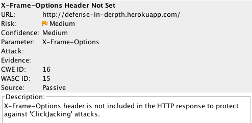
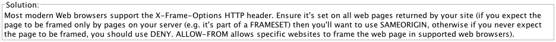

Security Assessment of server-vuln.js
by Patrick Zwierzynski
Introduction
The purpose of this assessment is to outline any potential security flaws
within the provided server-vuln.js app. By visiting the default homepage
here
the page should display a list of user "check-in" information, including
login name, latitude and longitude coordinates, and time of check-in. This
is all done via the app's three routes (two GET and one POST), which are
used to recieve user check-in info from user requests as well as post all
user check-in info as a response.
Methodology
This assesment was performed via a two step process. The first of which was
"black-box" testing, which involved setting up, running, and searching for
vulnerabilities within the app without reviewing its source code. This was
performed using the OWASP ZAP vulnerability scanner software. The second
of which was "white-box" testing, which involved manually
reviewing the source code and attacking anything that appeared particularly
vulnerable. This was done using the "curl" command in the terminal. When
scanning for vulnerabilities, a heroku site running a live version of server-vuln.js
(http://defense-in-derpth.herokuapp.com/)
was used. Any curl tests were performed both locally and on the heroku site.
Abstract of Findings
After performing both black-box and white-box testing, some vulnerabilities
were found within the server-vuln web app. These issues are mainly a result
of not checking the user input for correctness. While most of the data, such
as the user longitude and latitude coordinates, is validated before being
added to the database, other input data fields, such as the user login name,
rely on user correctness, which leaves the database vulnerable to malicious
data.
Issues Found
-
Cross Site Scripting (XSS)
-
This issue was found on the '/sendLocation' POST route.
-
High Risk as this vulnerability allows
for a malicious user to run javascript/html code from the web app to
potentially steal other users login names and locations. Can also run
code to completely render site unusable.
-
This issue was found in the code after the login user input data was
requested. While the lat and lng input fields are properly validated,
the input login field only checks if it is undefined. In addition to
this, there was no check to filter out any characters that allow for
javascript/html code to be executed. The code below shows where the vulnerability exists:
-
By inputting the following curl command:
I was able to "hide" all the check-in entries before me, display an invalid
check-in entry, and automatically play a youtube video in the background
that the user is unable to turn off (not that they would want to turn off
the awesome jams :D). See the image below for proof:

-
This issue can be easily fixed by creating a "filter" within the code that removes
any special characters from the login input. An example of this is:
...
var login = request.body.login;
login = login.replace(/[^\w\s]/gi, '');
...
-
Injection
-
This issue was found on the '/checkins.json' GET route.
-
High Risk as this vulnerability allows
for a malicious user to access login data that is not authorized.
-
This issue was found in the code after the login user input data was
requested. After this data was requested, it was only checked to see
if the data was undefined or null, which leaves it vulnerable to an
injection attack. The code below shows where the vulnerability exists:
-
Normally, the /checkins.json route should display the following site:
Using a query string with the $ne (not equal) operator, I was able to
request all the current data being stored in the database. This query
string displays all data whose "login" name is not equal to 0. See the
image below for proof:
-
This issue can alse be easily fixed by creating a "filter" within the
code that removes any special characters from the login input. More
specifically, the "$" character is to be removed. An example of this
is:
...
var loginEntry = request.body.login;
loginEntry = loginEntry.replace(/[^\w\s]/gi, '');
...
-
X-Frame Options Header Not Set
-
This issue was found on the '/' GET route.
-
Medium-Low Risk as this vulnerability
does not protect against 'ClickJacking' attacks, in which "a web user
can be tricked into clicking on something different from what the user
perceives they are clicking on, thus potentially revealing
confidential information or taking control of their computer"
(https://en.wikipedia.org/wiki/Clickjacking).
-
This issue was found during black-box testing using the OWASP ZAP
scanner of the defense-in-derpth heroku site. The following image
below shows the scanner output:

-
The scanner offers the following solution to fix the issue:

Conclusion
The vulnerabilities in the server-vuln.js file leave the web app exposed
to many security issues, ranging from rendering the app completely unusable
to exposing potentially confidential and sensitive user information.
The issues themselves (at least the two high risk vulnerabilities) appear
easy to implement and fix. My recommendation would be to shut down the app
immediately and fix the changes quickly before any further damage can be
done.